Scale Wind Turbine
This was the final project for 3-Dimensional Modeling and Design course at UC Berkeley. The project goal was to create a wind turbine blade and base. The blade was tested in a mock wind tunnel with the goal of generating the most electricity compared to the rest of the teams, while the base was tested with weights and a fully with the goal of withstanding the most force. In this project I was the manufacturing lead and I also collaborated with another team member on creating the generative design for the base.

 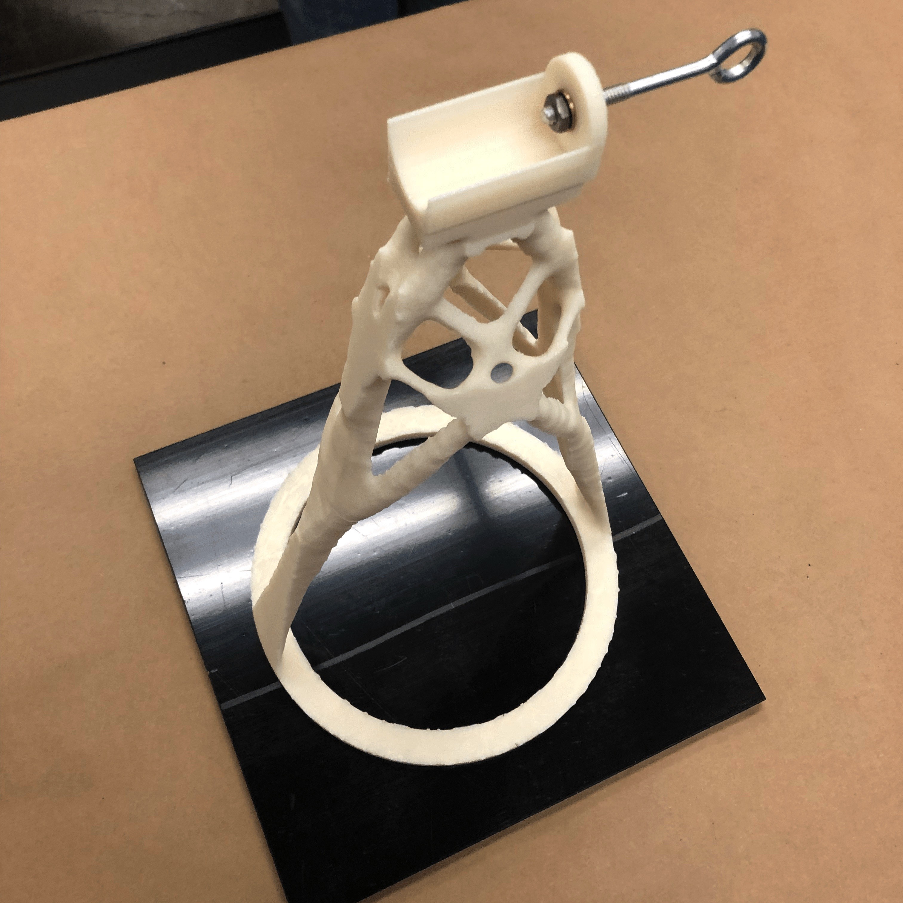
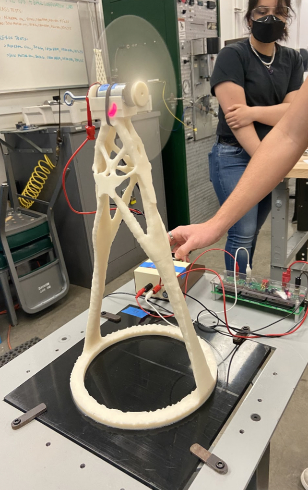
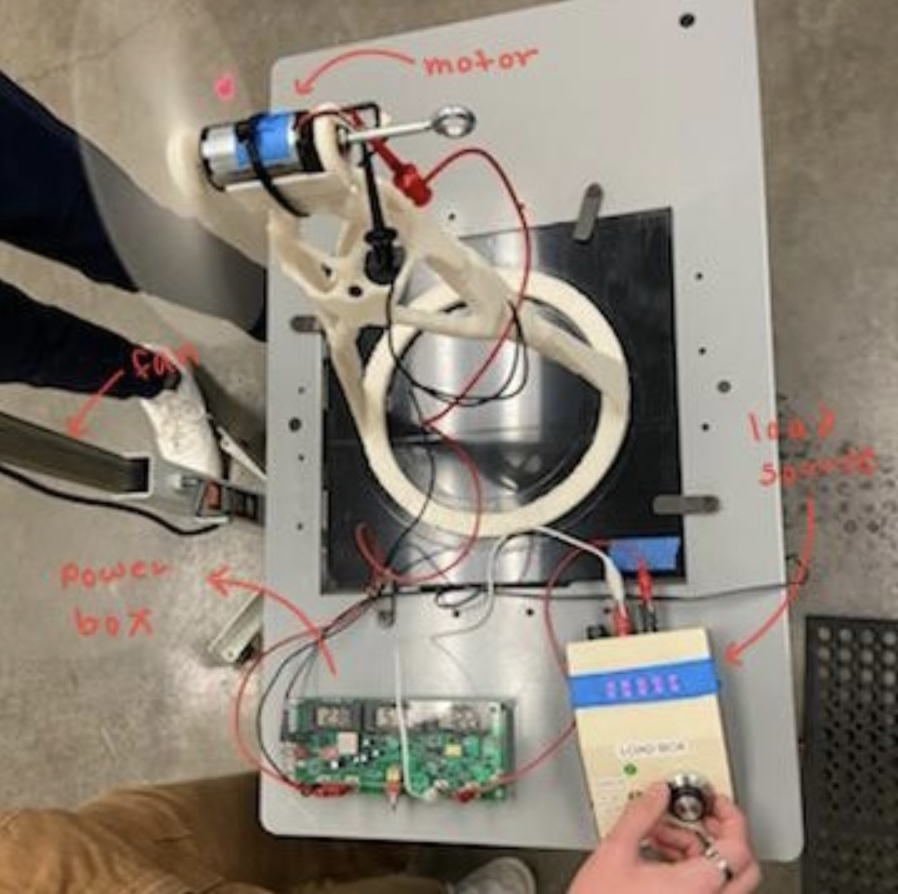
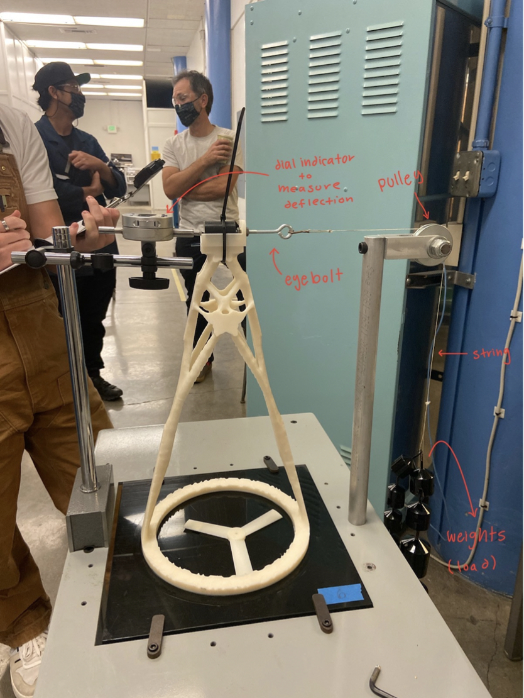
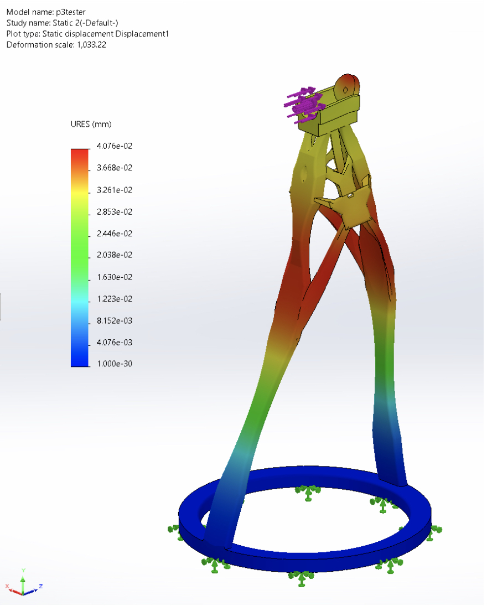
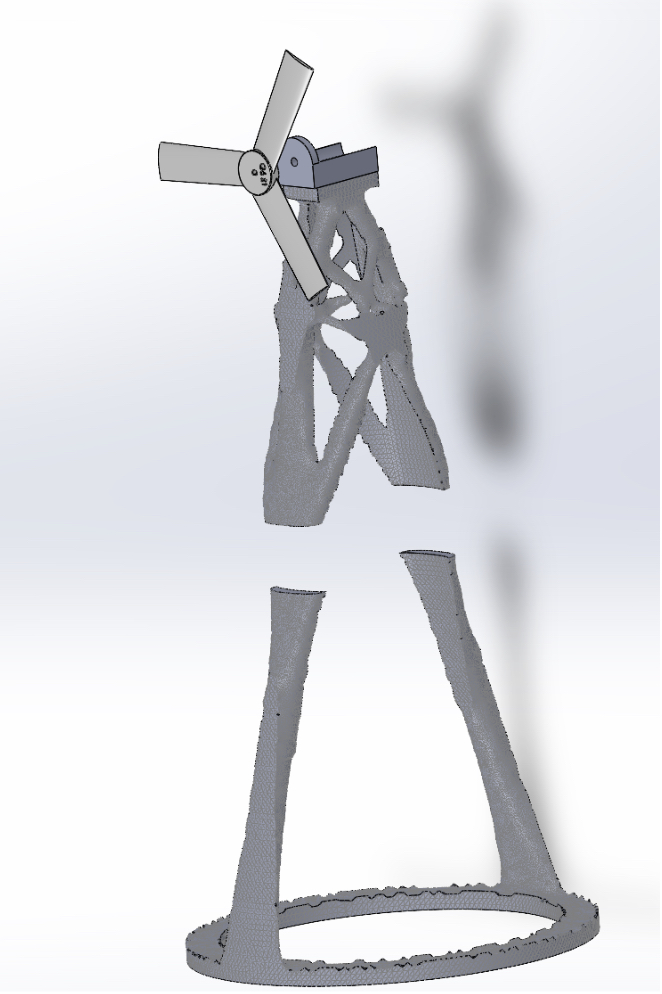
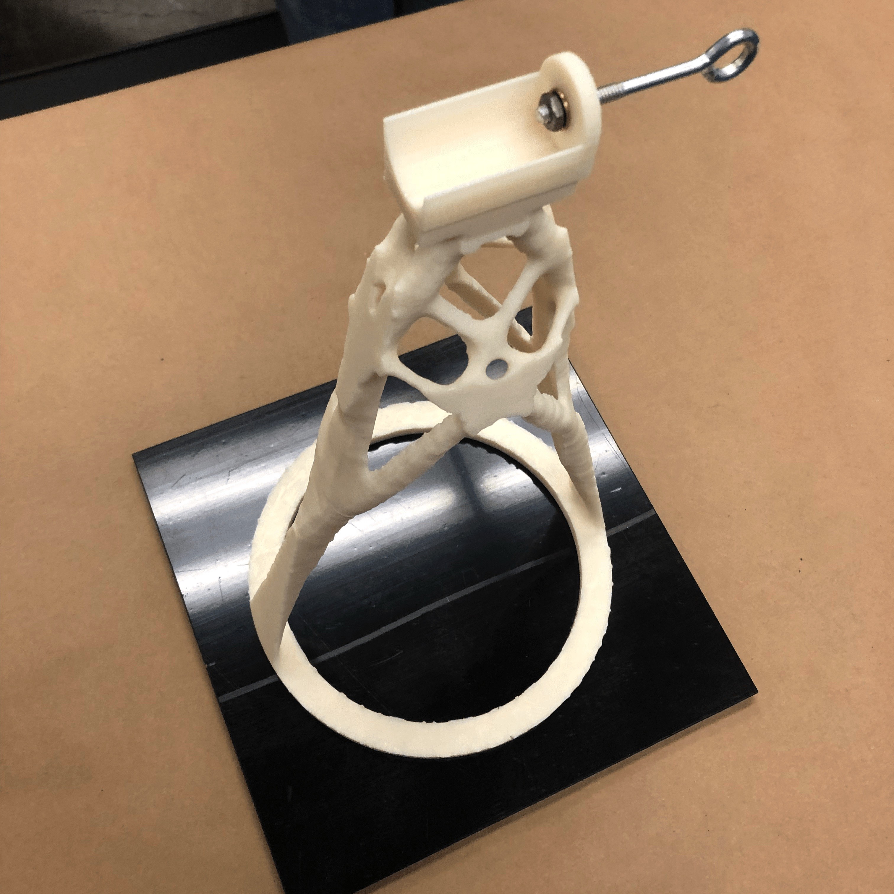
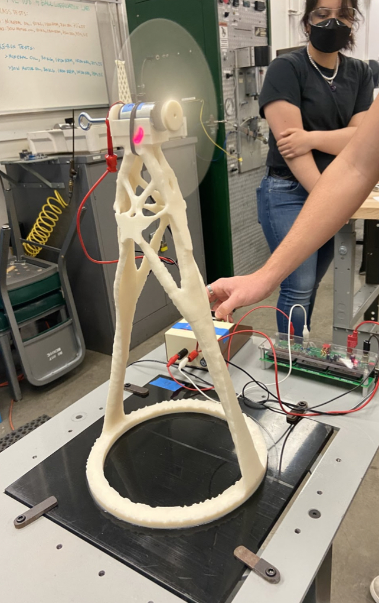
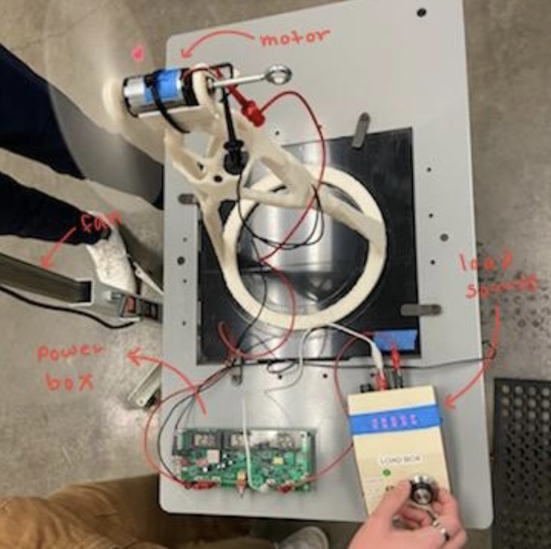
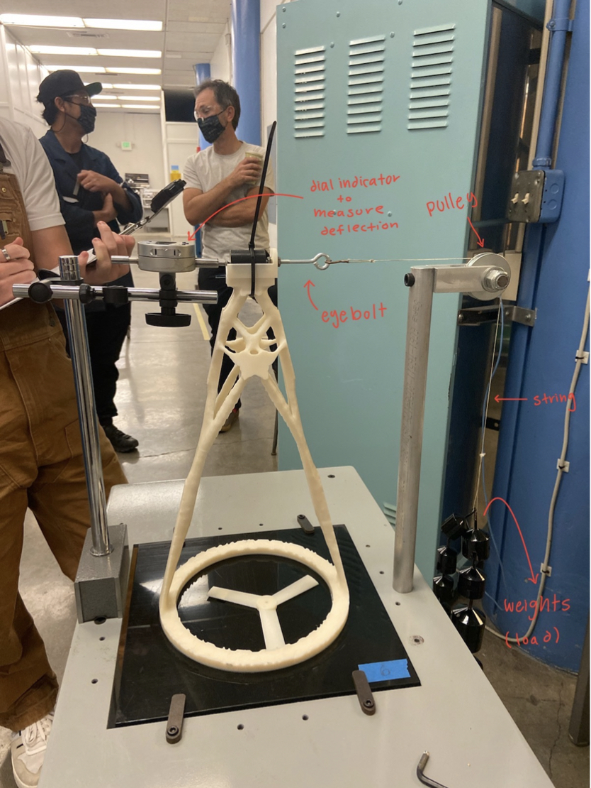
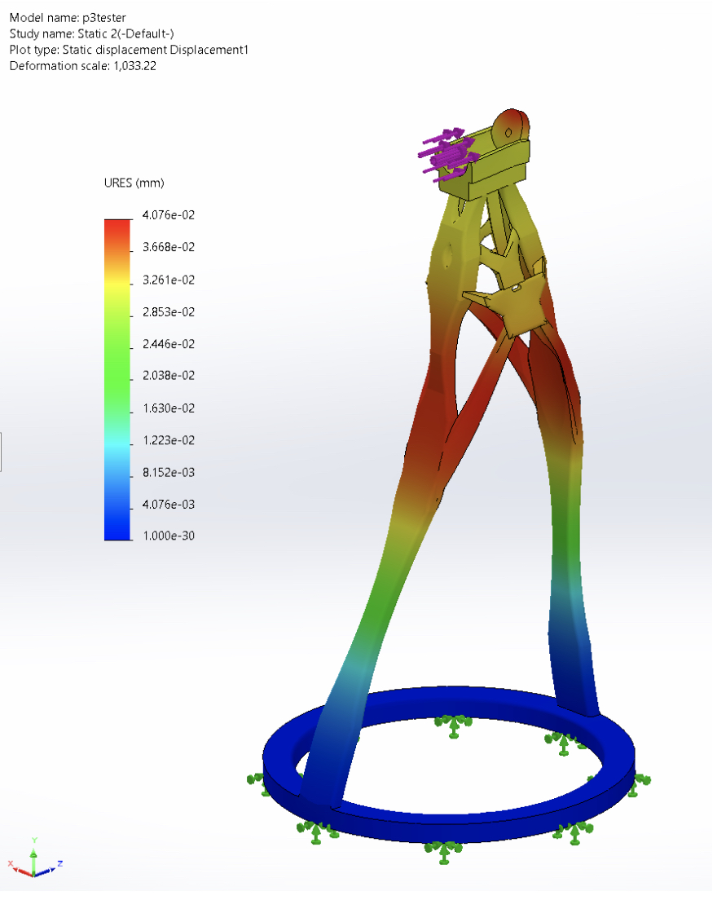
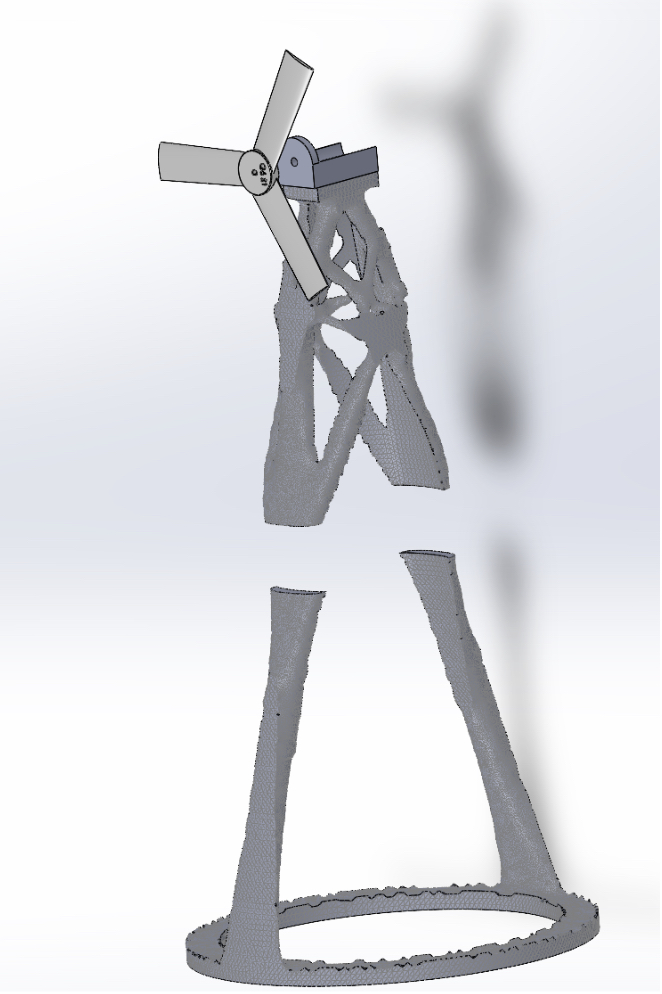
Project Summary
This project explored the capabilities of wind turbine design. Our group was tasked with
3D printing a wind turbine that could hold a 1 kg load and generate the maximum power
possible within an 18 in3 volume and 16 in height constraint. Our group met frequently to
brainstorm and research the expansive field of wind turbine design, and combine our researched
knowledge with our Solidworks proficiency to create a product that maximized efficiency and
stability. As a result, our group produced an organic model that strayed from industry standard
but still successfully met the requirements of this challenge.
To start the design process
our group researched the key aspects of the most efficient wind turbine designs and debated the
pros and cons of each. We also expanded our turbine design vocabulary by researching the most
efficient pitch, angle of rotation, aerofoil, and angle of attack of our turbine blade. After
careful evaluation, we used experimental research to determine the best turbine blade, designed
in Solidworks.
Following the blade design was the tower structure. We found through research
that multiple types of turbines are currently used (i.e. cross hatching towers and conical towers),
however these are most efficient when scaled to real life size. Given the small volume constraint
of the project, we decided a computer generated tower design would prove most efficient for our
goals.
Using Solidworks, we produced a unique, organic model created from countless stiffness
and efficiency tests done by a computer, which took the guessing work out of tower design. Its
unique structure was designed specifically for the requirements of the project, and made use of
the allotted height and volume. The program also created the design file.
With a blade and
tower created, our team glued the tower together and later commenced a stiffness and power test.
Our tower weighed in at 1325.3g, was 16 in tall, and had a maximum power of 1.21 watts. The tower
successfully sustained the load of 1 kg with a deflection of .37mm. Our group added additional
weight to a maximum of 9 kg with a deflection of 3.81mm—however the tower did not break under
this much weight and we were not able to go to failure with the deflection test. Our turbine
design went above and beyond and met the objectives of the project.
Design
The course of our design for the wind turbine was broken into two parts: the blades and
the tower. This decision was made because so long as the tower met the 16 in height
requirement and was stable enough to hold the blades and motor it would not in any
significant way interfere with the performance of the turbine blades. For the design
of the turbine blades, we began by finding an adequate airfoil profile. Through our
research, we decided on using the SG6043 airfoil profile as it was designed to perform
well in low Reynolds number scenarios which our small scale mandated. From there, we
decided to use three blades as that was the most efficient design and was commonly used.
With the profile and number of blades decided we then had to decide on the angle of attack
and blade profile twist. We decided on an 8-degree angle of attack because the SG6043
airfoil at low Reynolds Numbers achieves its peak lift to drag ratio at 8 degrees which
we also confirmed via fluid simulation in Solidworks. As for the blade profile twist, our
research as well as Solidworks fluid simulation indicated that a 15-degree twist from 8
degrees to -7 degrees would be ideal. The final design decision we had to make was that
of chord length for our blades. Given that chord length directly correlated to lift
generated, we maximized our chord lengths while staying within the width constraints of
the pre-designed blade hub. Given all those design decisions, we arrived at our final
blade hub pictured below. The final blade and hub design was 3 in. in diameter and 0.25 in.
tall.
For the design of the tower, the process was more straightforward. Tasked with
maximizing our stiffness to mass ratio, we employed topology optimization to maximize the
strength of our tower. Starting from a generic rectangular prism matching the tower build
dimensions (sans the motor hub which we designed separately and simply to fit dimensionally
with the motor) we used the Topology Study feature in Solidworks and the loading scenario
given in the testing procedure to create a model that fit within the 18 in3 limitations.
The hub which was designed separately and added to the top of the tower.
Manufacturing
The most significant tool used in the fabrication of the turbine was a 3d printer which additively created our designs. About 235 grams of ABS plastic was used in this step which printed the design in three parts: the blades and hub, the bottom half of the tower, and the top half of the tower. The amount of ABS plastic used costs about 10 USD. After the designs were printed and the supports removed, the top and bottom half of the tower were glued together using a small volume of the ethyl-based adhesive Loctite Super Glue. Finally the entire tower was glued to the base plate using the same glue.
Reflection
The efficiency of our turbine was significantly lower than the efficiency of the
average commercial turbine. The efficiency of an average turbine is 20-40% while
ours was 7.13% (“Renewable Energy Fact Sheet: Wind Turbines”, 2013). This could
be due to the differing scales between our design and real turbines.
Overall, we all learned a lot about wind turbines and their construction. The
project also allowed us to learn more about Solidworks, basic fluid dynamics, and
the math behind what makes an effective wind turbine. Even though it wasn't as efficient
as we would have liked, the tower performed a lot better than we expected to in the
deflection test and we are satisfied with our results.